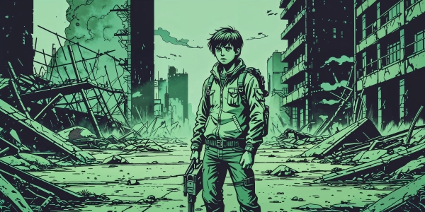

Ciao, sono Simone! Il mio viaggio attraverso i media
Ciao e benvenuto in questo angolo speciale del web, dove condivido con te un caleidoscopio di passioni, progetti e sogni che prendono forma attraverso le parole e la tecnologia. Qui troverai il racconto sincero delle mie tantissime idee e dei miei pochissimi talenti – una confessione ironica che nasconde in realtà un mondo ricco di sperimentazioni e curiosità intellettuali.
La comunicazione è il filo conduttore che unisce tutto il mio lavoro. Attraverso i podcast cerco di creare ponti tra idee complesse e la vita quotidiana, mentre con la web radio esploro il fascino senza tempo della voce che arriva dritta al cuore degli ascoltatori. Ogni episodio è un'opportunità per dialogare, condividere e scoprire insieme nuove prospettive.
Tra pagine e algoritmi
La narrativa rappresenta il mio rifugio creativo, dove le storie prendono vita e i personaggi sussurrano segreti che solo la scrittura sa rivelare. Ma il mio sguardo è rivolto anche al futuro: le mie idee di sviluppo si intrecciano con il mondo affascinante dei Grandi Modelli Linguistici, esplorando come l'intelligenza artificiale possa diventare un nuovo strumento narrativo e comunicativo.

The Safe Place v1.0.0 "Ultimo's Journey" – Un Nuovo Orizzonte!
Cari amici e futuri sopravvissuti,
È con un misto di orgoglio e un'emozione che quasi fatico a contenere che vi annuncio un momento davvero speciale per "The Safe Place": abbiamo varcato la soglia della versione v1.0.0 "Ultimo's Journey"! Dopo un percorso di sviluppo che è stato una vera e propria avventura, con momenti di pura esaltazione e altri in cui la complessità sembrava insormontabile, quel sogno che coltivavo da tempo ha finalmente preso la forma di un gioco completo e giocabile.
Le ultime fasi di sviluppo sono state intense e hanno portato a integrazioni che credo arricchiranno profondamente l'esperienza. Abbiamo introdotto un sistema di progressione del personaggio ispirato ai classici D&D, seppur semplificato per adattarsi alla nostra natura testuale. Ora Ultimo potrà crescere, accumulando punti esperienza attraverso le sue azioni – dall'esplorazione al crafting, dalla sopravvivenza notturna al superamento degli eventi – che potranno poi essere spesi per migliorare le sue caratteristiche fondamentali.
Non vi nascondo che questo progetto, nato come un esperimento per esplorare le frontiere della collaborazione tra la visione umana e l'intelligenza artificiale, è stato un viaggio incredibile. Ho imparato tantissimo, e se da un lato sono sbalordito dalle potenzialità di questi strumenti come "compagni" di programmazione, dall'altro ne riconosco ancora gli aspetti controversi e i limiti, che richiedono una guida e una supervisione umana costanti e attente. Ma è proprio questa sinergia, a volte faticosa, a volte esaltante, che ha permesso a "The Safe Place" di diventare quello che è oggi.
Con sincero entusiasmo,
Simone Pizzi
The Safe Place Development Project